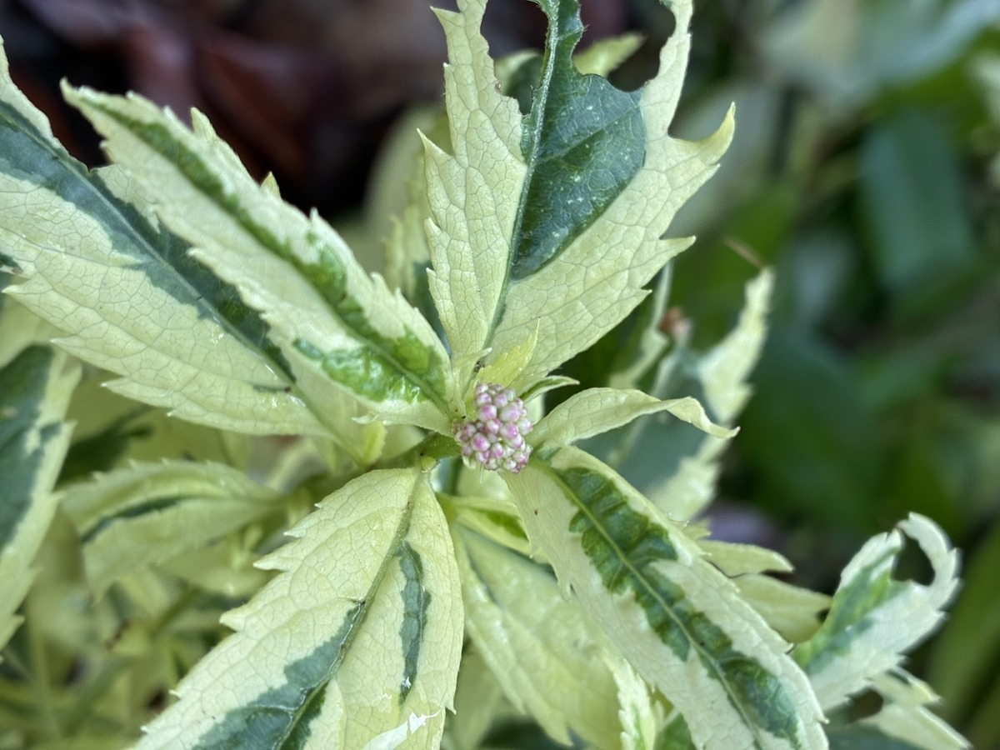

2025/09/20 わが家の観察記録
植え付けから約2か月が経過しましたが、成長は非常にゆっくりで、フジバカマ（原種系）や羽衣と比べても生育は緩やかに感じます。

10苗から増えた約30株のうち、この日に蕾をつけていたのはわずか1株だけでした。斑入りの明るい葉の中心に、小さな蕾がまとまって形成されています。蕾は「ピンクフロスト」という名前を思わせるような、はっきりとしたピンク色です。
翌日の9月21日には、蕾を確認できる株が3株に増えました。少しずつではありますが、秋の開花に向けて動き始めているようです。
茎はまだ細いままで、株全体も原種系のフジバカマや羽衣ほど勢いよく大きくなってはいません。品種としての性質も考えられますが、実際に育ててみると、株を充実させるにはある程度の年数が必要なのかもしれないと感じます。
一方で、クリーム色の斑が大きく入る葉は非常に美しく、花がない時期でも十分に楽しめます。生育の速さだけでなく、この斑入り葉そのものがピンクフロストの大きな魅力だと感じます。
今年も猛暑が続き、雨の少ない時期が長くありました。その影響もあり、植物にとっては成長しにくい夏だったのかもしれません。
ただ、9月10日頃に2日間ほどまとまった雨が降ったあと、庭で育てている4種類はいずれも急に成長が進んだように感じました。気温の変化に加えて、久しぶりに十分な水分が土に入ったことも、生育が動き始めるきっかけの一つだったのかもしれません。
0 件